Headwind Safety: Hip-Bend Experiment
Supporting files
Additional photos, video recordings, requirements, and project notes. The main case study presents the selected results; these files provide further context and design history.
Each file can be opened or downloaded individually. Expand a category to browse individual files. HEIC images may require downloading to view.
Code (1)
code/Data Proccessing/final.m · 0.01 MB · Download
Data (7)
Read text
Drag Scalling Factor: 12.47 Lift Scalling Factor: 72.48 Frequency (Hz) Free Stream Velocity (m/s) Drag_V_Avg Drag_V_Std Lift_V_Avg Lift_V_Std 0.00 0.00 -0.251855 0.000972 -0.031301 0.000206 30.00 22.67 -0.156434 0.001063 -0.027586 0.000427 35.00 26.45 -0.103705 0.000856 -0.025758 0.000537 40.00 30.23 -0.065075 0.000872 -0.024088 0.000691 45.00 34.01 -0.004461 0.000844 -0.021752 0.001066 50.00 37.79 0.053427 0.001987 -0.019403 0.001437 55.00 41.57 0.123062 0.001934 -0.016622 0.001455 60.00 45.35 0.211093 0.002395 -0.013559 0.001535
data/150degdata.txt · 0.00 MB · Download
Read text
Drag Scalling Factor: 12.52 Lift Scalling Factor: 89.49 Frequency (Hz) Free Stream Velocity (m/s) Drag_V_Avg Drag_V_Std Lift_V_Avg Lift_V_Std 0.00 0.00 -0.152981 0.000536 0.012289 0.000103 30.00 22.67 -0.039851 0.003947 0.016058 0.000622 35.00 26.45 0.005855 0.003865 0.017214 0.000542 40.00 30.23 0.059461 0.004407 0.018184 0.000606 45.00 34.01 0.122300 0.006653 0.019604 0.000976 50.00 37.79 0.195325 0.009477 0.020734 0.001295 55.00 41.57 0.270671 0.009529 0.020996 0.001489 60.00 45.35 0.355546 0.013079 0.021152 0.001913
data/165degdata.txt · 0.00 MB · Download
Read text
Drag Scalling Factor: 12.52 Lift Scalling Factor: 89.49 Frequency (Hz) Free Stream Velocity (m/s) Drag_V_Avg Drag_V_Std Lift_V_Avg Lift_V_Std 0.00 0.00 -0.162858 0.000655 0.018232 0.000105 30.00 22.67 -0.045125 0.003355 0.018215 0.000525 35.00 26.45 0.001755 0.004052 0.018229 0.000520 40.00 30.23 0.057650 0.003703 0.018536 0.000746 45.00 34.01 0.122376 0.005010 0.018250 0.000840 50.00 37.79 0.197877 0.009740 0.017809 0.001268 55.00 41.57 0.282270 0.007295 0.017124 0.001272 60.00 45.35 0.374984 0.008937 0.016402 0.001484
data/180degdata.txt · 0.00 MB · Download
data/Code.pdf · 0.04 MB · Download
Read text
For ts, 165, 180 Drag Scaling Factor: 12.52 Lift Scaling Factor: 89.49 T = 21degC uncorrected pressure: 751.7 mmHg For ts2, 150 Drag Scaling Factor: 12.47 Lift Scaling Factor: 72.48 T = 19.9degC uncorrected pressure: 744.0 mmHg
data/data.txt · 0.00 MB · Download
Read text
Drag Scalling Factor: 12.47 Lift Scalling Factor: 72.48 Frequency (Hz) Free Stream Velocity (m/s) Drag_V_Avg Drag_V_Std Lift_V_Avg Lift_V_Std 0.00 0.00 -0.253956 0.000984 -0.010563 0.000220 30.00 22.67 -0.244483 0.001231 -0.009212 0.000299 35.00 26.45 -0.239367 0.001017 -0.006898 0.000373 40.00 30.23 -0.237350 0.001335 -0.006339 0.000276 45.00 34.01 -0.222782 0.001161 0.000382 0.000462 50.00 37.79 -0.216164 0.001954 0.002870 0.001033 55.00 41.57 -0.208479 0.001664 0.005325 0.000882 60.00 45.35 -0.201718 0.004594 0.008102 0.000603
data/teststand2data.txt · 0.00 MB · Download
Read text
Drag Scalling Factor: 12.52 Lift Scalling Factor: 89.49 Frequency (Hz) Free Stream Velocity (m/s) Drag_V_Avg Drag_V_Std Lift_V_Avg Lift_V_Std 0.00 0.00 -0.162110 0.000740 0.021670 0.000144 30.00 22.67 -0.155533 0.002810 0.023565 0.000455 35.00 26.45 -0.152555 0.001592 0.024003 0.000352 40.00 30.23 -0.149275 0.002669 0.024333 0.000508 45.00 34.01 -0.144794 0.002610 0.024764 0.000519 50.00 37.79 -0.140860 0.006998 0.025501 0.000732 55.00 41.57 -0.135941 0.006342 0.026203 0.000833 60.00 45.35 -0.130955 0.008451 0.026988 0.000752
data/teststanddata.txt · 0.00 MB · Download
Documents (2)
Read text
Original STP File Source: https://grabcad.com/library/human-3d-2 Whole Body: Original: 178.05 cm Goal: 17.458 cm Scale: 17.458/178.05=0.098051109239 Legs: Scale1: 8.886032853 cm Goal: 8.6285 cm Additional Scale: 8.6285/8.886032853=0.97101824208 Total Z Scale: 0.098051109239*0.97101824208=0.09520941572 Torso: Scale1: 8.568365275 cm Goal: 8.8295 cm Additional Scale: 8.8295/8.568365275=1.03047660979 Total Z Scale: 0.098051109239*1.03047660979=0.10103937463
documents/HUMANSCALING.txt · 0.00 MB · Download
documents/Procedure for open lab.docx · 0.02 MB · Download
Media/Images (15)
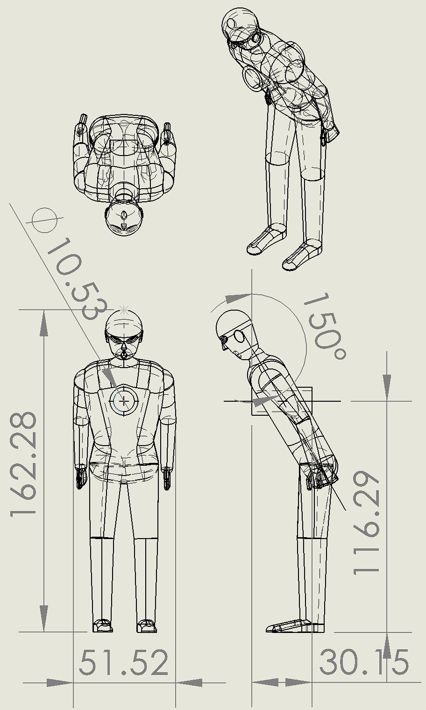
media/images/150degpartdwg.jpg · 0.21 MB · Download
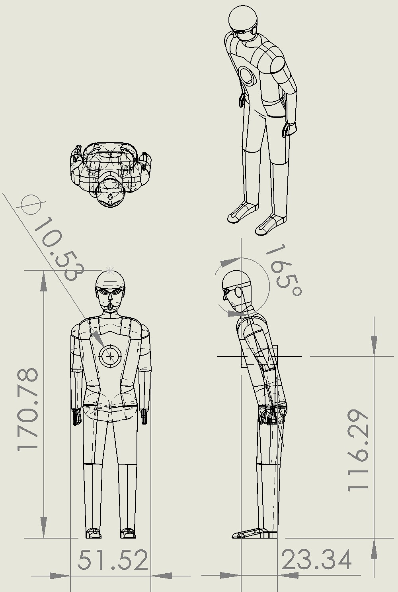
media/images/165degpartdwg.jpg · 0.18 MB · Download

media/images/180deg model setup.jpg · 3.35 MB · Download
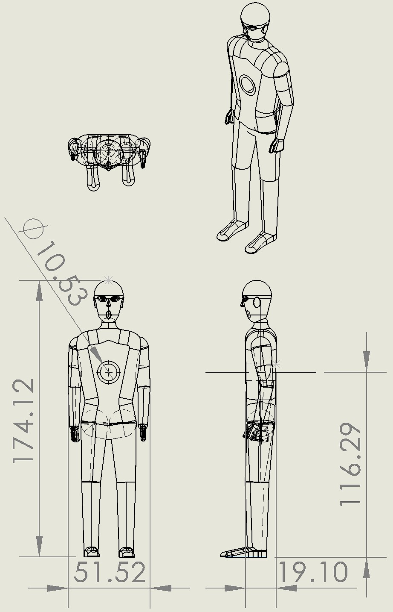
media/images/180degpartdwg.jpg · 0.16 MB · Download
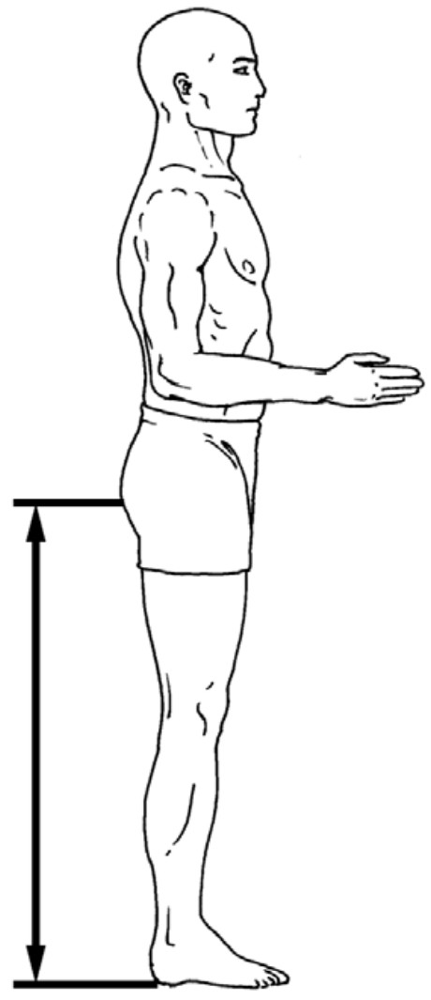
media/images/buttockheight.jpg · 0.04 MB · Download
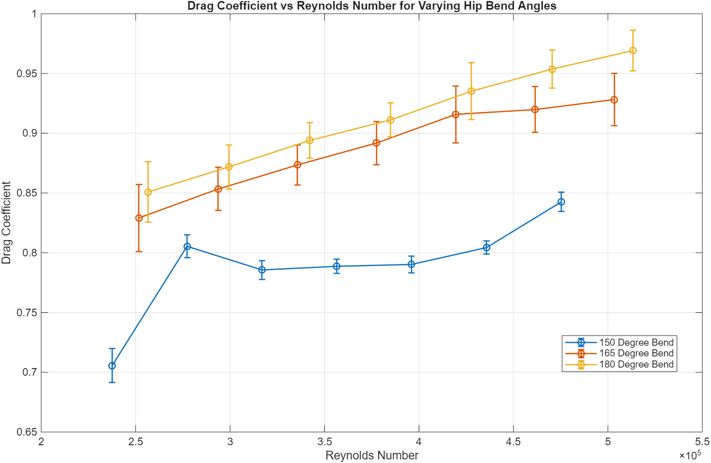
media/images/DragVSRe.png · 0.07 MB · Download
media/images/HUMAN.JPG · 0.03 MB · Download
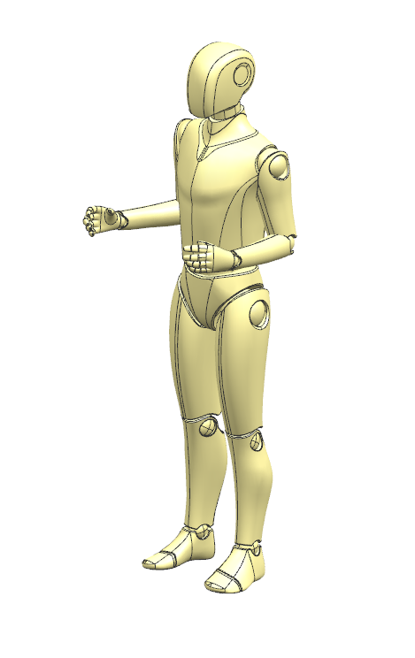
media/images/HUMAN.PNG · 0.11 MB · Download

media/images/HumanForce vs Wind.png · 0.06 MB · Download
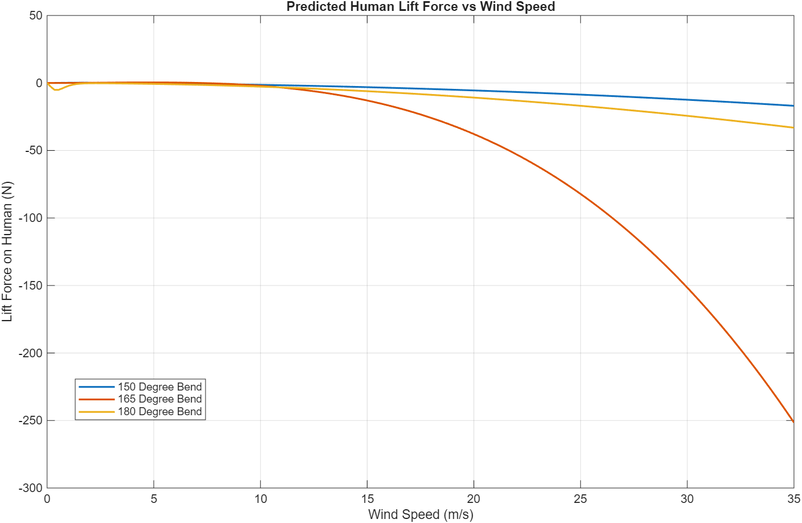
media/images/HumanLiftVSWind.png · 0.06 MB · Download
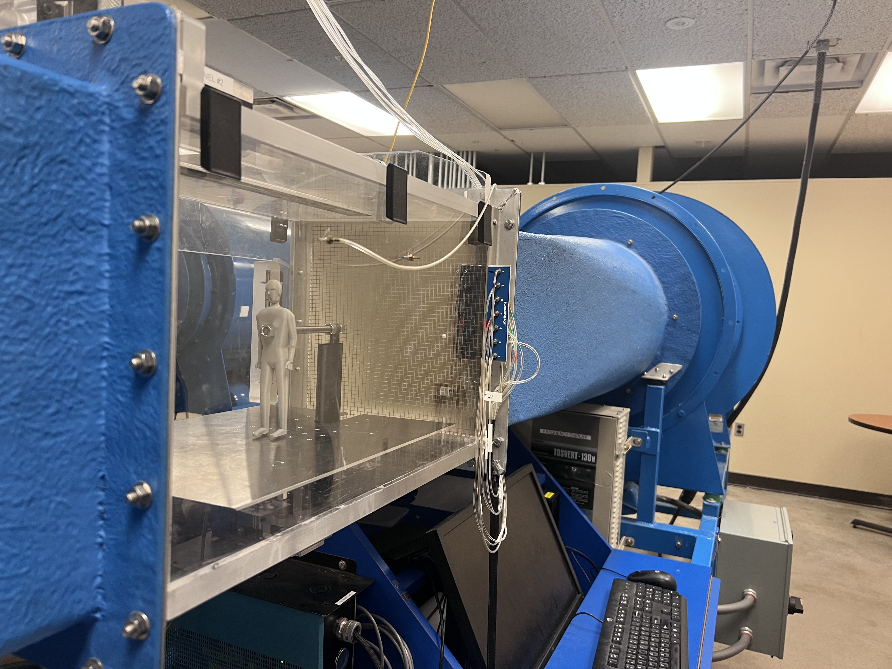
media/images/IMG_9420.jpeg · 3.03 MB · Download
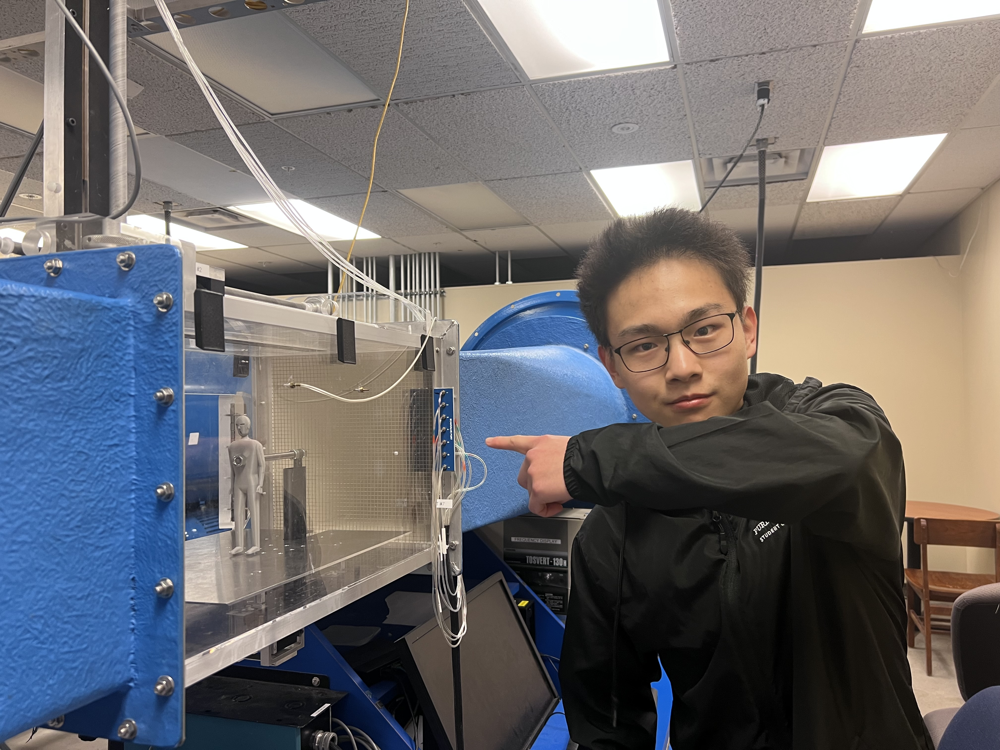
media/images/IMG_9421.jpeg · 2.70 MB · Download
media/images/istockphoto-1299034738-612x612.jpg · 0.02 MB · Download
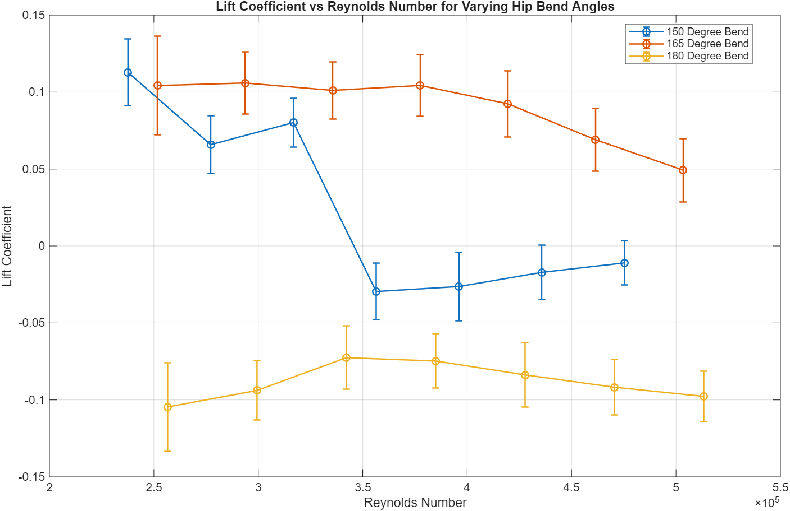
media/images/LiftVSRe.png · 0.06 MB · Download
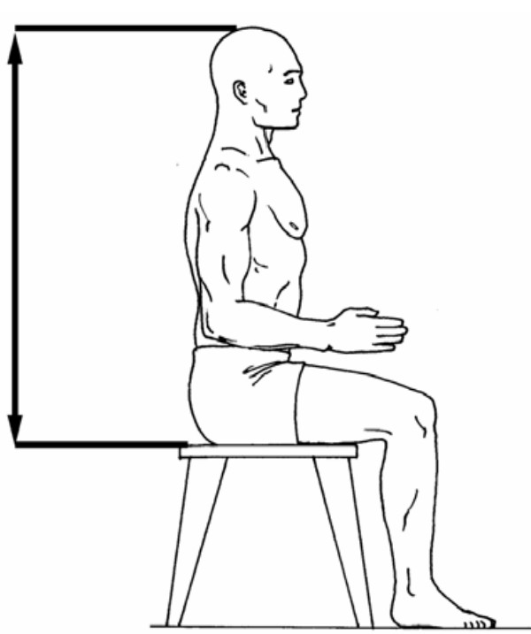
media/images/sittingheight.jpg · 0.04 MB · Download


Notes (1)
Read text
# Headwind Safety: Hip-Bend Experiment ## Purpose Investigate how hip bend changes headwind-induced lift and drag, and explore their implications for slipping and liftoff using scaled human models. ## Requirements and constraints - Compare 1:10-scale PLA human models at hip angles of 150°, 165°, and 180°. - Measure lift and drag across approximately 22.7–34.0 m/s wind-tunnel speeds. - Account for test-stand forces, mounting interference, and imperfect ground clearance. - Assess the limits of extrapolating quasi-static, small-scale results to a person exposed to real wind. ## Engineering contribution I helped formulate the project idea and design the experiment with the team. We developed a wind-tunnel test using three printed human models, a dynamometer, and a ground plate, including test-stand baseline measurements. The team’s analysis compared lift and drag coefficients, uncertainty, and modeled full-scale forces. I contributed to the written report, including its introduction, objective, and method. ## Outcome and limits The team designed and conducted the experiment and produced a final report. The findings did not establish a reliable ideal posture or real-world safety threshold. Mounting interference, incomplete dynamic similarity, ground-clearance effects, and the inability to reproduce gusts limited the conclusions. The report documents these limitations and recommends improvements to the mounting, model, and test conditions. ## Interpretation limits Mount interference, incomplete flow similarity, untested gusts, and model-to-ground clearance limit the experiment. Results do not establish practical safe walking conditions. The overreaching full report and presentations were removed. Original requirements/proposal material describes the planned study, not a validated outcome.
project-notes.md · 0.00 MB · Download